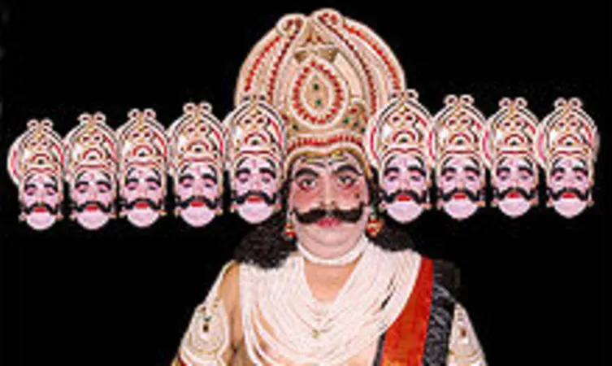
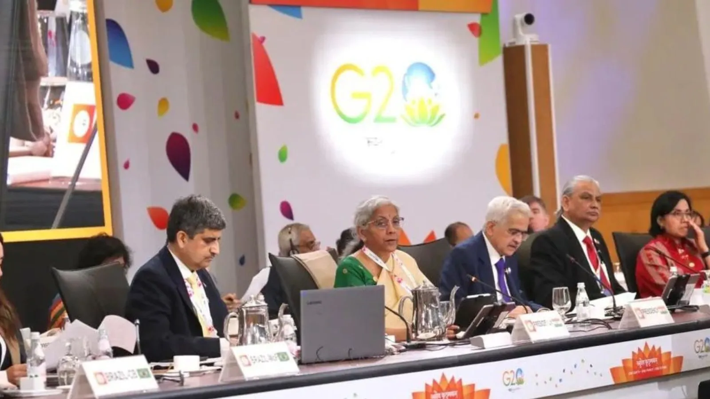
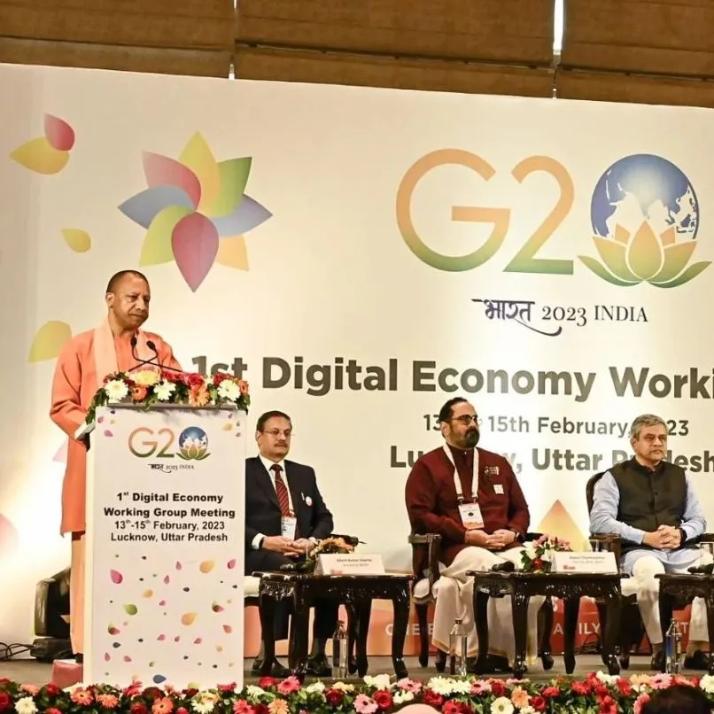

MEDIA GALLERY
Varanasi is easily accessible from all parts of the country. Very well connected by road, rail and air, the City offers convenient and comfortable travelling options to and from other cities of India.
1. RAMNAGAR RAMLEELA EVENTS
Ramnagar Ramleela is considered to be the oldest and the most outstanding Ramleela in the entire world that is held during October in Varanasi. During this event the skits are performed by the Ramleela performers of Ramnagar that revolve around the Hindu epic Ramayana.
YouTube Video Name: Documentary on World Famous Ramleela, Ramnagar | विश्वप्रसिद्ध रामलीला, रामनगर | Project Varanasi
Huge crowds gather to be a part of this grand-scale performance and with great zest, the artists narrate the story of Lord Rama. The celebration lasts for ten days, with the last day being the day of Dussehra.
Distance from Varanasi: Location Keep Changes
Best Time to Visit: Dussehra and Diwali
2. G20 SUMMIT EVENT IN VARANASI
The G20 Summit is taking over Varanasi as a three-day event will be taking place this week. 20 leading countries from across the world will be taking part in this grand event. Representatives from other partner countries will partake in the Agriculture Working Group meeting to discuss various important issues. The Uttar Pradesh government-led by Chief Minister Yogi Adityanath has made all possible arrangements to ensure everything runs smoothly.
According to an official statement, the main aim of the G20 Summit event in Varanasi is to promote the importance of nutritive foods, food security and environment-friendly farming to keep the whole world healthy. There will be a total of 6 G20 meetings in Varanasi. Here’s everything we know about the grand event.
YouTube Video Name: India@G20 | G20 development Ministers' meeting held in Varanasi | DD India
The events kickstart from 17 April with the first Agriculture Working Group meeting taking place in the city. UP CM Yogi Adityanath has given instructions to beautify the city for the event. Along with this, tight security arrangements have been established. The motto of G20 Summit is “Vasudhaiva Kutumbakam.”

On the last day of the event in Varanasi, a discussion and finalization of the MACS (Meeting of Agricultural Chief Scientists) 2023 communique will take place. Delegates from 20 leading countries of the world and other partner countries will visit the Trade Facilitation (TFC) Center at Bada Lalpur in the afternoon that day.
3. Street Food in Varanasi - ULTIMATE 18-HOUR OLDEST Indian Street Food Tour in Banaras, U.P India! 🇮🇳
वाराणसी के 12 Best Street Food spots near the heavely ghats and thatheri bazaar! AMAZING Indian Street Food Tour in Varanasi, India! We tried some of the BEST and most TASTY street food in India, and is a TRUE curry HEAVEN! DEEP in the alleyways, you can eat street Food that is INCREDIBLY CHEAP and Delicious! Varanasi ,Uttar Pradesh is officially the VEGETARIAN Heaven of Indian Street Food and in this episode I have explored the cheapest and best street food of Varanasi / Banaras / Kashi. Some of these street food joints are more than 100 years old.
This episode of Best Street Food in Varanasi features:
3.1. The Ram Bhandar for Kachodi Sabzi and Jalebi
3.2. Shree Ji for the best Malaiyyo on Banaras
3.3. Laxmi Chai Wale for their Makkhan Toast and Tea
3.4. Heeng ki Kachori
3.5. Blue Lassi Shop for the Saffron Lassi & Mix Fruit Lassi
3.6. Gulleria Cafe with the most amazing view of Ganga in Banaras
3.7. Ganga Arti at Dashashwamedh Ghat
3.8. Lemon Tea at Assi Ghat
It was altogether a heavenly experience and the first day was one of the best food exploration day of varanasi.
Exploring Iconic Food Joints of Thatheri Bazaar, Varanasi | Tere Gully Mein | Curly Tales
LOCAL & FOREIGNERS' REACTIONS
Visiting India's Holiest City (Varanasi Travel Vlog)